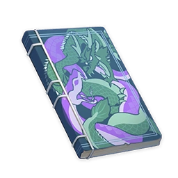

Inazuma · Books & Literature
The Serpent and Drakes of Tokoyokoku
This Watatsumi folktale retells Aberaku’s imprisonment, the Sunchilds’ rule, and a child’s meeting with the Profane Serpent, presenting Orobashi’s arrival as cultural memory rather than a full chronicle.

A Watatsumi Folktale in Novel Form
The Serpent and Drakes of Tokoyokoku is a quest-item book sold by Yae Publishing House. Its description says the original text was transcribed on Watatsumi and carried to Narukami while Orobashi still lived; the book presents itself as a novel based on Watatsumi folktales.
It also describes a worldview from before Watatsumi adopted aspects of Narukami culture. The text is therefore a cultural retelling, not an impartial chronicle of Enkanomiya’s entire history.
Aberaku and the Sunchild
The story opens with the sage Aberaku and the first Sunchild. It says the Tokoyo Ookami opened Aberaku to wisdom and that he made the underground star that brought light to Enkanomiya. The Sunchild, jealous and already intent on punishing him, imprisons him; Aberaku is then overthrown by ambushing troops.
After light weakens the Dragonheirs’ advantage, a human Sunchild is crowned and rules harshly. These events are compressed into the book’s narrative and should be compared with Before Sun and Moon and the Enkanomiya quest records rather than used as a complete chronology by themselves.
The Child and the Profane Serpent
Much later, an Enkanomiyan child dives beyond the three darkened corners in search of a Dragonbone Flower and encounters a huge serpent. The serpent calls itself the Profane Serpent and tells the child that it has no mortal followers in this realm.
The child asks the serpent to become their god. The novel closes by sending human and serpent together against the Sunchild’s royal authority and the Dragonheirs beyond it, casting Orobashi’s arrival as the turning point of its folk history.
Relationship to the Byakuyakoku Collection
The description and text also appear in Volume I of The Byakuyakoku Collection. In the Collection of Dragons and Snakes quest, the Enkanomiyan librarian Ema asks for the book and notes that the copy the Traveler brings has a different cover and script from the collection’s edition.
The purchased Inazuma readable and Ema’s returned copy belong to the same story, but their catalog history and the quest’s recovery context are distinct. Neither detail makes every element of the folktale literal historical fact.
This is an original CoreGG reading guide, not an official HoYoverse article or a reproduction of the game text. Source links below identify the records used so you can check the original context.
Sources & references
Check these sources for the original game text and reference trail.